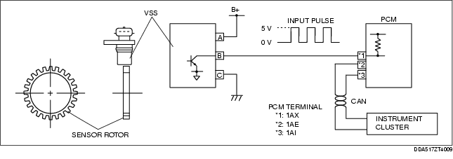

VEHICLE SPEED SENSOR (VSS) CONSTRUCTION/OPERATION [FN4A-EL]
id0517a1109400
• The VSS is a GMR element type. A 24-pulse signal is generated per rotation of the sensor rotor and the VSS sends this signal to the PCM.
• Consists of an IC in which a giant magneto resistive (GMR) element and signal processing circuit have been integrated, and a magnet. Signal reliability has been improved with the adoption of the GMR element resulting in the signal amplitude being wider compared to the hall element.
• Signal detection uses the special characteristics of GMR to change the electrical resistance corresponding to the magnetic field.
• The size (GMR output) of the magnetic field detected by the GMR element is changed into short waves as a sensor output signal at the signal processing circuit.
• The PCM performs EC-AT control based on the VSS and throttle position sensor signals.
• The PCM also outputs the vehicle speed signal to the instrument cluster.
